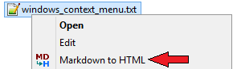
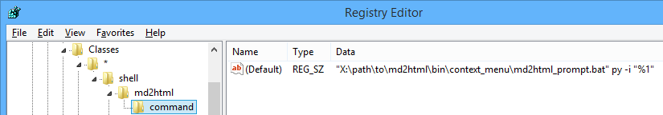

This is a simple command line utility that easily converts single Markdown documents into single static HTML pages. It's provided with a suitable HTML templates and scripts for batch processing and integration.
This document describes the converter's features and restrictions, gives usage notes, and itself demonstrates a possible obtainable result.
This is a simple example of Markdown syntax:
> A **monad** is just a _monoid_ in the category of `endofunctors`.
This plain text will be converted into the following HTML code:
<blockquote>
<p>A <strong>monad</strong> is just a <em>monoid</em> in the category of <code>endofunctors</code>.</p>
</blockquote>
that will look like this:
A monad is just a monoid in the category of
endofunctors.
Note that the closing angle bracket (>) is also a part of the syntax. It marks up the line
as a <blockquote> HTML element.
This must be mentioned that Markdown is intended to be easy-to-write and easy-to-read in plain text. It contains just a very small subset of HTML features but allows inclusion of direct HTML code.
This site (among others) may be viewed for more details about Markdown and its syntax.
This utility has two implementations: in Python and in Java. They work mostly the same way, have the same command line syntax, use the same source files and templates. The two implementations are shipped together as source code and share some common artifacts like templates, scripts, and documentation. The implementations can be separated though this may hardly be needed as for now the overall size of the distribution is pretty small. This document contains information that is common for all the implementations. Implementation-specific details (like system requirements and installation) are described in separate documents:
MD2HTML_HOME environment variable as the absolute path of this directory.A simple usage example for the Python version is:
>python %MD2HTML_HOME%/python/md2html.py -i test.txt
This will convert file test.txt into file test.html using default conversion parameters.
The Java version will work the same way. All options are described in the
implementation-specific documents.
File md2html_batch.bat may be used for generating several HTML-files in one run. It uses
list file md2html_list.txt in current directory. The list file contains arguments for a
single HTML-file generation per line. The first optional parameter specifies the utility
implementation. Also the other arguments will be sent directly to the executable module. See
the script code for more details. With the following example:
>%MD2HTML_HOME%\bin\md2html_batch.bat py -f
the Python version will be used and all HTML-files will be forcefully regenerated. If the first
argument is nether py nor java then the Python version is used.
The above command may be executed in any directory and it will process the list file in that
directory. If %MD2HTML_HOME%\bin is added to the PATH then this prefix will not be required.
File generate_html.bat may be run by double-click from Windows file explorer. It works the same
way as script md2html_batch.bat except it doesn't finish in case of errors/exceptions so the
command window remains open. This scripts is very small and may be copied to a project's
directory where it will process the project's list file.
bin/win_context_menu directory contains artifacts for integration into Windows Explorer
context menu:

It opens a command line prompt window and allows to redefine some options. Just pressing
Enter will fulfill generation with default options.
To add this context menu item, press Win+R, type regedit and add the following keys
and values:
[HKEY_CURRENT_USER\Software\Classes\*\shell\md2html]
@="Markdown to HTML"
"icon"="X:\\path\\to\\md2html\\win_context_menu\\icon.ico"
[HKEY_CURRENT_USER\Software\Classes\*\shell\md2html\command]
@="\"X:\\path\\to\\md2html\\bin\\context_menu\\md2html_prompt.bat\" -i \"%1\""
Note. 1. @ stands for (Default) value name. 2. py or java may be added before -i.
3. The quotes must be set like this:

The following structure may be suggested for a documented project:
$ tree -L 2 --charset=ascii --dirsfirst
.
|-- html_resources
| `-- pict
|-- md2html_templates
| |-- template1
| | `-- template.html
| `-- template2
| `-- template.html
|-- doc1.html
|-- doc1.txt
|-- doc2.html
|-- doc2.txt
|-- generate_html.bat
`-- md2html_list.txt
html_resources directory is used for images, CSS and other resources. Probably it may contain
other Markdown files and generated HTML documents that we don't want to have in the project's
root. This directory will be packaged with the HTML files in the project's root if we are
going to send the documentation separately from the project. Alternatively we can use
directory named doc that would contain all necessary HTML documentation files and the
resources. In this case Markdown source files may be located somewhere in a directory like
src;md2html_templates directory contains custom templates if they are used. The directory may
be called md2html_template with a single template.html file if only one custom template
is used;doc1.txt and doc1.html are the Markdown document and it's corresponding generated HTML
version that we want to have in the project's root;generate_html.bat — the double-click script for the whole HTML documentation regeneration;md2html_list.txt — the project's list file.Some elements may be omitted if they are not required.
Along with periodical manual HTML files regeneration a Git hook may be used to do it
automatically on commit. Special argument --report was introduced for this purpose. It outputs
the generated output file path if this file was generated or regenerated so that a Git hook can
add it into the stage. Here's a Git hook pre-commit example (works in Windows too):
#!/bin/bash
grep -v '^\s*$' md2html_list.txt | sed -e 's/\r//' | while read args; do
result=`echo ${args} | xargs python3 ${MD2HTML_HOME}/python/md2html.py -r`
exitcode=${PIPESTATUS[0]}
result=`echo $result | sed -e 's/\r//'`
if [ $exitcode -eq 0 ]; then
if [[ -n $result ]]; then
echo md2html.py: Adding: $result
git add -- ${result}
else
echo md2html.py: Skipping one file
fi
else
echo Error: $result
exit 1
fi
done
This script uses the list file md2html_list.txt that has been already mentioned in this
document. To add this hook create file pre-commit with the above content in directory
.git/hooks of your Git repository.
This utility works in Linux. The scripts for batch processing and integration are not written
yet but they may be adapted from the above Git hook example. Some hints: in addition to other
possible changes -r argument must be changed to -v and git add command must be removed.
A template file (see the source code of this file
for example) consists of HTML code that is translated as-is and placeholders that are replaced
with their corresponding content. The placeholder format is ${name}. The following
placeholders are implemented:
${title} — will be replaced with the page title;${styles} — will be replaced with the in-lined or linked CSS;${content} — will be replaced with the result of the Markdown document processing.Notes. 1. In uncertain cases
$$may be used to represent a single$in a template. This does not apply to the Markdown texts where expressions like${name}are not processed.2. Though the Python version will recognize placeholders in format
$name(without curly braces) it's not recommended to use them.
The template is specified by directory in order to retain compatibility in case of further modification of the utility.
This document is created using a custom template that contains specific elements and so cannot be set as the default. If you want to use this template in your project, just make a copy of corresponding files (the custom template and the additional CSS file) and change them accordingly.
See the implementation-specific documents for examples of the default template usage. This template must be suitable for most documentation tasks.
By default CSS is included into the HTML document; this makes documents standalone (if they don't use pictures and other resources). Command line arguments can redefine this behavior.
This document itself demonstrates the capabilities of this implementation. This section provides some other examples. See the source Markdown files, like this, to know how such results may be obtained.
| Text effect | Markdown syntax |
|---|---|
| bold | __bold__ or **bold** |
| italic | _italic_ or *italic* |
in-line code fragment |
`in-line code fragment` |
<del>deleted</del> |
|
| inserted | <ins>inserted</ins> |
— (em-dash, —) |
--- |
Note. Special markdown syntax for inserted (
++inserted++) and deleted (~~deleted~~) text is not implemented in this utility. First, these effects must not be used very often. Second, such murk-up may cause problems if we write text like "C++", or++i.
[TOC] element in the Markdown document will resolve into the document's table of contents in
the generated HTML. The example can be seen at the top of this page.
Unfortunately by now there's no way to insert a local ToC, i.e. a ToC for a certain header that would contain only the sub-headers of this header.
Link and image usage is demonstrated multiple times in this document. The link syntax is
[link text](path/to/doc.html "title") where "title" is not required. link text may also
be omitted but the link will be invisible. There's another syntax <path/to/doc.html> that will
make the link text equal the link location.
The image syntax is , where ALT and "title" are not
required.
An image may be used as a link text. So the following code
[](readme.html#anchor_demo) will create the following link:
.
To place an anchor, the following code was used:
<a name="anchor_demo"></a>.
The following text demonstrates a multi-level list.
Blockquotes are inserted by starting each line with >.
Links, images and some other Markdown elements may be used inside
blockquotes:
Tables may be used for representing tabular data and for text alignment sometimes. In this implementation light table style is selected as the default.
| Item No | Name | Description | Price |
|---|---|---|---|
| 1 | Chair | Kitchen chair | 87.50 |
| 2 | Table | Kitchen table | 450.00 |
| 3 | Lamp | Standard lamp | 120.75 |
If we want to just align text we can use a table without a header:
| 10 | 20 | 30 | 40 |
| 50 | 60 | 70 | 80 |
| 90 | 100 | 110 | 120 |
Note. Small extra gap appears above header-less tables that is not avoidable so far.
Markdown doesn't have syntax for different table styles, but some trick may be used to get
this — we can add an invisible element (an empty <div> in this case)
right before the table and then use some simple CSS magic to define the appearance:
<div class="tablePlated"></div>
Then we can get styles like this:
| Item No | Name | Description | Price |
|---|---|---|---|
| 1 | Chair | Kitchen chair | 87.50 |
| 2 | Table | Kitchen table | 450.00 |
| 3 | Lamp | Standard lamp | 120.75 |
and this (class="tableGridded"):
| Item No | Name | Description | Price |
|---|---|---|---|
| 1 | Chair | Kitchen chair | 87.50 |
| 2 | Table | Kitchen table | 450.00 |
| 3 | Lamp | Standard lamp | 120.75 |
Fenced code blocks may be set up by four-space indent, or by four backticks (````), i.e.
the following mark-up:
````
Example of
preformatted
text
````
will look like:
Example of
preformatted
text
This type of block visually corresponds to inline code fragments.
Style may be specified the following way:
````text
This is a light code block example.
It is also preformatted
but has no background.
````
The result will be:
This is a light code block example.
It is also preformatted
but has no background.
There are also shell code block (marked as shell):
$ echo "This block demonstrates operations in a shell"
This block demonstrates operations in a shell
and program language code block (marked as code):
System.out.println("This block demonstrates " +
"a source code in a program language.");